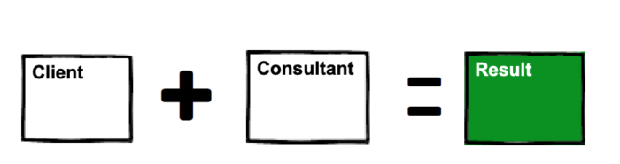

Financial freedom · Part 3
Chapter 11: Consulting (or coaching)

A lucrative way to share your expertise—and help others get amazing results
As a consultant or coach, you provide specialized solutions at a premium price.
Over the years I've worn many hats: an employee working with consultants, a business owner hiring consultants, and now, as a consultant myself. This allows me to see from "both sides of the table"—and it means I can help you set yourself up for success as a consultant.
Why people hire consultants
Don't let anyone fool you: the only reason people hire consultants is for a result. That's it. End of story.
Sure, they may say they want something else: to learn from you or help train their team. But at the end of the day, they're looking for a result. I've worked with hundreds of clients and discovered you sometimes need to push back on secondary goals to ensure you get the result.
The rule of consulting: get your client the result they want. Do that, and everything else falls into place.
The benefits of consulting
The benefits of consulting are huge, especially for someone who strives for financial freedom. As a consultant you can work remotely, and charge a higher rate than you could in a salary position.
I love four things about consulting: freedom, autonomy, higher pay and a results-based environment.
Freedom
As a consultant, you enjoy a greater sense of freedom than a traditional employee. No one expects a consultant to hang around the office for 40+ hours a week. This gives you the freedom to drift in and out of a company at will.
Autonomy
The mantra of consultants is "Get the result. Figure it out." Autonomy is a wonderful, beautiful thing: you don't need to report to anyone so long as you get results.
Higher pay
Consultants are not paid for their time; they are paid for results.
This should go without saying. Consulting is (or at least should be) brain work. If you can get a result in 15 minutes, then by all means get the damn result!
The best consultants excel at solving specific problems and providing tangible results. Clients quickly realize they are not paying for your time, or your expertise, or any other ballyhoo—they are paying for results.
Results-based environment
As we've already discussed, when people hire a consultant, the result is all that matters.
So it follows that yo work in a results-based environment. This is amazing for you. The benefits of working in a results-based environment cannot be understated:
You become more productive. When you focus on results, you quickly learn what works—and what doesn't. You can always tell a seasoned consultant from a rookie: while the rookie may solve every problem along the way, the pro will have avoided those problems in the first place, because they've seen them so many times before. As an analogy, seasoned pros sidestep the landmines, because they've walked into them before.
You measure success objectively. In the book Bullshit Jobs, the author highlights the number of jobs that really have no impact on the world (or worse, a negative impact on the world: think telemarketers). When you work in a results-based environment, you agree on the rules of the game ahead of time, and what it takes to win. It's like any game: and just as rewarding when you win.
You build a results-based résumé. Imagine you're hiring a consultant to grow your business. You've two applicants: the first got their MBA from Harvard, but lacks practical experience. The second applicant dropped out of college, but has testimonials from 100+ clients, each citing a tangible result. Whom do you hire? When it doubt, go with the proven performer.
The different services that consultants offer (and which is right for you)
Consultants offer a wide variety of services, which fall on a spectrum:
-
Done-for-you
-
Done-with-you
-
1-on-1 coaching
-
Group coaching
... and each one of the above can be done on a recurring, or one-off basis.
So which is right for you?
I recommend starting with done-for-you for three reasons.
Reason 1: It's the easiest service to sell. Remember: people hire consultants for a result. And when you offer a done-for-you service, clients don't need to do anything else but pay you. The result comes with little extra effort.
Reason 2: You learn what works—and what doesn't. This also creates empathy. You can tell clients: Look, I've been in your shoes dozens of times, and the most important thing to do is [X] while avoiding [Y]. And since you've been in their shoes, you understand their challenges—and this makes you a better consultant.
Reason 3: It's the most profitable (at first). Offering a done-for-you service allows you to charge a premium price. Why? Because you're offering an end-to-end solution for you. Also, you get paid first, then deliver the service. Contrast that to writing a book or creating a course, which can take months or years to get paid—if at all.
In many cases, you can offer done-for-you services and stick with just that.
However, there are some drawbacks to done-for-you.
First, done-for-you doesn't scale. (This is true for nearly every consulting business.) At some point you'll reach your own capacity; while this is a good problem to have, you'll need to hire other people to either (i) find more clients, (ii) deliver the service to existing clients, or (iii) a combination of the two. All these take time and money, and do not work at scale. So, while done-for-you is highly profitable at first due to a higher Lifetime Value, it may not be as profitable as selling group coaching, or a fully automated course (which scales easily).
Second, done-for-you may not work for larger (i.e. more profitable) clients. For example, offering web design to a company like Facebook would be hard, due to the amount of red tape. But if you offered advisory services—such as identifying accessibility issues for people with disabilities—you could work with the big companies.
Third, it's difficult to sell the business. The average multiple for a consulting business is scandalously low: often just over one year's earnings. That's painfully low.
To summarize, start with a "done-for-you" service, then transition to 1-on-1 or group coaching, and then use that content to create books and courses.
Put another way, "done-for-you" helps you find solutions, 1-on-1 or group coaching helps you explain those solutions, and the books and courses help explain those solutions at scale.
How to get started as a consultant
Becoming a consultant is a five-step process:
-
Find a problem.
-
Find an audience.
-
Offer a result.
-
Deliver result.
-
Repeat.
A simple way to get started—and nail steps 1 through 4 with ease—is to teach local classes. When I got started in online marketing, and I taught an "Internet Marketing for Beginners" class at my local community college.
Doing so helped me:
-
find a problem (as an entrepreneur, I had these problems myself),
-
find an audience (since the community college mailed their list),
-
offer a result (I wrote the course description in the mailer),
-
deliver the result (by teaching the class), and
-
get paid upfront.
I recommend this approach—either in person or online—because it allows you to find a buying market before creating anything. In my case, all I had to do was pitch the idea of the class to the school, and write the class description. If no one signed up, I didn't have to create the course.
Think about that: this approach pays you first, then do the work.
You can also teach online. Reach out to well-known people in your market; offer to teach a free class to their subscribers. By offering a live training, you:
-
build your brand by associating with an expert in your market.
-
gain exposure by reaching new audiences.
-
provide value to a large number of people.
Not bad, eh?
At the end of the training, you can pitch your services. You can split the sales revenue with the person you've partnered with, or keep the profits yourself. Everything's negotiable.
Of course, you don't need to sell anything—but it helps. It helps because learning to sell is vital to success; plus, it forces you to focus on growing your business (and not just teaching for free).
What you don't want to do is spend six months to a year writing blog posts or a book without getting feedback (or paid, which is the best form of feedback).
How to qualify prospects
Depending on your offer, market, and price point, you may need to qualify your prospects.
For example, you could create a simple Google Form for free that asks your prospect several key questions. Or you hop on a free call to discuss their needs.
No money changes hands yet; you're just asking questions.
Asking questions helps you do two things. The first, and most important, is that it shows you how committed a prospect is to working with you. While it may seem great to work with a client who pays you and doesn't do anything, this approach is not viable in the long-term. Remember, consultants are in the business of getting results. Results happen with a motivated client. There is nothing worse than getting halfway into a project only to realize the client doesn't want what you sell.
The second benefit is that you gain a better understanding of what your prospect really wants. It gives them the chance to reflect, and explain in their own words how you can help.
Listen closely to what prospects say. Use their exact words in your marketing materials to ensure you are speaking the language of the market.
Accept payments
Don't overthink this. You're just getting started, so don't go buying flashy new accounting software. Your focus now is primarily finding prospects, converting them to clients, and getting them great results. Therefore, getting paid should be as simple and low-tech as possible.
Consider the following options:
Accept payments over the phone. If you're speaking with a prospect and they're ready to do business, ask for their credit card number over the phone. Simple and effective. And if they hesitate, send them a link where they can buy online (more on that in the next section).
One thing to be aware of with accepting orders over the phone is that there is a greater chance of fraud. But I think this applies more towards e-commerce, where fraudsters can make money re-selling stuff they buy online. With consulting, that's not really an issue.
By check.
Accept payments online. Payment processors are a pain. So rather than waste time, just use whatever's easiest to get up and running. PayPal is awful, but it's pretty easy to get started. Plus, everyone is familiar with PayPal, so they trust it. I prefer Stripe, but it may take longer to set up. Another option is Gumroad. Consider Gumroad if you plan on delivering digital products like ebooks.
Ask for referrals
If you want to ask for referrals, use a template approach and tweak accordingly based on your clients' reactions.
I use the following at the end of a call (after I've delivered as much value as possible):
"Is there anything else you'd like to discuss? [Assuming they say no]. Great. This was a great call; we covered X, Y, and Z. And congratulations on [insert recent result]. Oh, one last thing before we hop off: we've been working together for some time, and seen really great results. Now, as I'm sure you know, a big part of my business comes from word-of-mouth: do you know anyone—coworkers, friends, family, or business acquaintances—that would benefit from my services as well?"
A few things to note about this approach:
-
Ask for the referral at the end of the call. It ensures you've provided as much value before asking your client for anything. Give before you receive.
-
Use the "yes ladder". The easiest way to get to a yes is to start with smaller yeses. So begin with a few simple facts your client will agree with automatically (assuming they're true!): "We've been working together for some time"... "We've seen great results..." Each of these statements elicit a simple nod of agreement from the client.
-
Don't say "do you know anyone...". It's too vague. Be specific. Instead of "Do you know anyone who would benefit from my services" say "Do you know any coworkers, friends, family, or business acquaintances who would benefit from my services?" When you specifically mention these groups of people, your client will automatically think of people in those groups. Don't make your client think if you don't have to.
Ask for testimonials (and share them with the world)
Use the template above for referrals, with a few simple tweaks.
"Is there anything else you'd like to discuss? [Assuming they say no]. Great. This was a great call; we covered X, Y, and Z. And congratulations on [insert recent result]. Oh, one last thing before we hop off: we've been working together for some time, and seen really great results. Now, as I'm sure you know, a big part of my business comes from word-of-mouth. Because of that, would you be open to providing a quick testimonial?"
How to collect testimonials in five minutes or less
There are two ways to collect a testimonial: written vs. video (or audio).
Video testimonials are ideal, but time-consuming. Both you and your client will need more time for this approach, and for that reason, I prefer written testimonials.
Written testimonials are fast, easy, and almost as effective as video. But they're easy to screw up, too. Don't ask your client for testimonial, then expect them to follow up with a written testimonial via email. That ain't gonna happen.
Rather than expect your client to email you their testimonial, do the heavy lifting for them. Here's how to get written testimonials quickly: as soon as the client's agreed to a testimonial, ask them about their results, write down their responses, and ask for their approval to publish it. I've done this several times, and it takes less than five minutes.
Use the following template:
"Thanks for agreeing to a testimonial. I find the simplest thing to do is ask you a few quick questions, jot down your answers, and use that as the basis for the testimonial. That way, you don't have to do anything besides answer a few quick questions. Is that OK with you?" [Notice the question at the end; you're asking for their buy-in early, and walking them up the "yes ladder."]
Then, ask them a few simple questions. Here's what I like to ask:
-
What made you want to work with me?
-
What were you biggest challenges before we started working together?
-
What results have you seen so far?
-
How would you describe your experience to a friend or colleague?
Write down their responses during the call. Edit it down to a paragraph or two, then read it back to the client (and preferably share your screen) and ask them to approve it.
Say the following:
"OK, I've jotted down your responses and edited them a bit. Does this sound good to you?"
Once they've agreed, put the testimonial on your website, social media, etc. Simple.